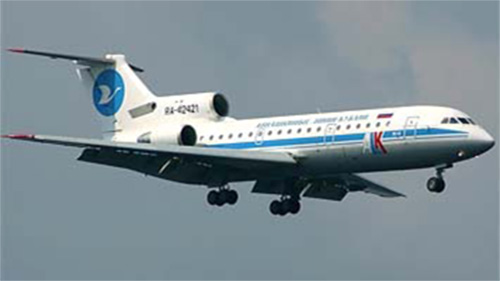

ЯК-42

- Разработчик: ОКБ Яковлева
- Страна: СССР
- Первый полет: 1975
- Тип: Ближнемагистральный пассажирский самолет
Як-42 — это трёхмоторный среднемагистральный реактивный авиалайнер, выпущенный в 1979–2003 годах. Он был разработан на основе Як-40 и способен перевозить 100–120 пассажиров на расстояние до 4 тысяч километров.
Самолёт имеет низкий стреловидный крыло и цельнометаллическую конструкцию с проектным сроком службы 30 тысяч часов полётов. Управление осуществляется двумя пилотами, сидящими бок о бок на полётной палубе.
Варианты Як-42 включают оригинальную производственную версию, модификацию для международных линий (Як-42МЛ) и дальнобойный вариант (Як-42Д). Также существует его производная Як-142 с обновлённой авионикой и другие специализированные версии.
| Летно технические характеристики | |
|---|---|
| Модификация | Як-42 |
| Размах крыла максимальный, м | 34.88 |
| Длина, м | 36.38 |
| Высота, м | 9.83 |
| Площадь крыла, м2 | 150.00 |
| Масса, кг | |
| - пустого самолета | 28960 |
| - нормальная взлетная | 53500 |
| Тип двигателя | 3 ТРДД Прогресс (Лотарев) Д-36 |
| Тяга, кН | 3 х 63.74 |
| Максимальная скорость, км/ч | 810 |
| Практическая дальность, км | 3900 |
| Практический потолок, м | 9600 |
| Экипаж, чел | 2-3 |
| Полезная нагрузка: | 120 пассажиров или 12800 кг груза |